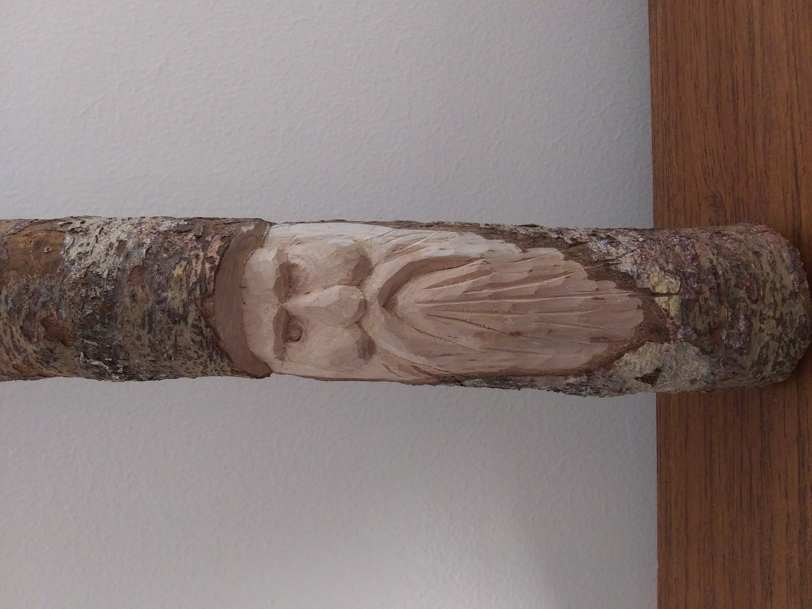

The dulcimer originated in the Appalachian Mountains in the late 17th century. Its roots can be traced to the Scotch-Irish and German settlers who brought their various musical traditions and instruments with them to the new world. The settlers adapted and modified these instruments to suit their new landscape, creating a uniquely American folk instrument.
Dulcimers were traditionally made entirely from one type of wood, usually something common to the area where the maker lived. In keeping with that tradition, I made this instrument from Bald Cypress. However, I also introduced several modifications as an experiment - a wide soundboard for extra volume, a carved top for increased projection, and an an integral fingerboard.

Intarsia is a woodworking technique that involves creating intricate designs by fitting together pieces of differently colored wood. These pieces are precisely shaped and assembled to form patterns or images, resulting in stunning decorative panels or pictures with a mosaic-like appearance. This chipmunk symbolizes the playfulness, curiosity, and resourcefulness of the natural world. A chipmunk's lively and energetic nature can evoke feelings of joy and spontaneity. Additionally, in some cultural contexts, chipmunks may be associated with diligence and thriftiness due to their habit of gathering and storing food for the winter. Made from high-quality birch plywood due to the strength required for small pieces.

A wood spirit is a traditional motif in which a face is used to embody the essence of nature, with features resembling those found in trees or forest-dwelling creatures. They symbolize a deep connection to the natural world, capturing the mystique and vitality of forests and woodlands within their likeness. Wood spirits serve not only as decorative art pieces but also as expressions of reverence for the beauty and spirit of the wilderness.